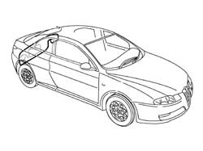
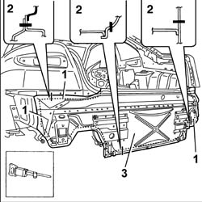
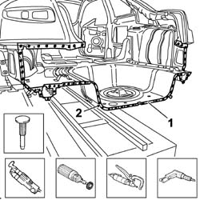
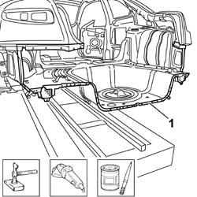
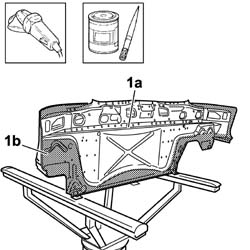
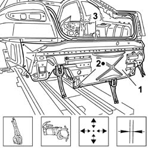
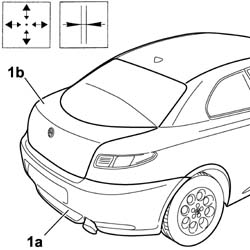
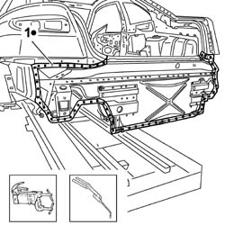
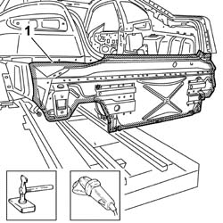

7210B70 REAR TRIM
- Path
- Procedures > 72 PANELS AND FRAME > 7210 REMOVING REFITTING > 7210B STRUCTURE ELEMENTS-CENTRAL AND REAR PART > 7210B70 REAR TRIM
- Kind
- repair procedure (removal / refitting; the operation number is the code)
- Applies to
- all engines; all production periods
- Interactive page
- https://sloeber94.github.io/elrnDB-aGt/en/#/125002052
Applies to: all engines; all production periods
 Removing
Removing
 Refitting
RefittingCheck that the components connected are not distorted by checking the bodyshell alignment measurements using suitable equipment (gauges, templates or jigs).
Straighten the body as necessary.

Applies to: all engines; all production periods
1. Use the power saw following the dotted cutting lines in the diagram.
2. Cutting sections representing the most important points in order to allow the operator to adjust the position and the depth of the cut in order not to damage the panels underneath.
3. Remove the rear trim from the vehicle.

Applies to: all engines; all production periods
Use the vibrating knife with the special blade to remove the P.V.C. from the vehicle rear trim.
Use the rotary brush to remove the paint to access the spot welds.
1. Use the chamfering machine to remove the spot welds shown in the diagram.
Use the drill and chamfer the spot welds not accessible to the chamfering machine.
Use the hammer and chisel and remove the spot welds milled previously.
2. Remove the protective trim offcut from the vehicle.

Applies to: all engines; all production periods
1. Straighten the edges using a hammer and dolly block.
Remove the spot weld residues using a disc grinder.
Apply electro-galvanizing paint.

Applies to: all engines; all production periods
1. Remove the anti-corrosion treatment (1b) from the entire perimeter of the replacement part (1a) using a disc grinder.
Apply the electro-galvanizing paint to the edges in contact with the vehicle.

Applies to: all engines; all production periods
Refitting
Removing1. Position the replacement part correctly on the vehicle and secure it using self-locking clamps.
2. Tack the replacement part by making a few spot welds.
Remove the self-locking clamps.
3. Position the tailgate housing seal.

Applies to: all engines; all production periods
1. Temporarily position the rear bumper (1a), close the tailgate (1b), then check the alignment and the uniformity of the surrounding gap.

Applies to: all engines; all production periods
1. Use the spot welder and work in the areas shown.

Applies to: all engines; all production periods
1. Correct any distortions to the panel using a hammer and dolly block.
Use a disc grinder to clean and level the areas previously involved in the welding.

Applies to: all engines; all production periods
Apply anti-oxidant protection to the areas involved in the welding
1. Seal the join lines
Proceed with the painting and waxing stage.
2. Renew the P.V.C. treatment.